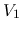

- Problem 1 (25 points)
Find the output in terms of the four inputs ,
 , , and . Assume .
, , and . Assume .
- Problem 2 (25 points)
An op-amp circuit is given below:
- What is the order of the circuit? What kind of filter is it
(high-pass, low-pass, band-pass, or band-stop)?
- Find the frequency response function
of circuit in canonical form, in terms of the cut-off or corner
frequency
 if the circuit is first order, or natural
frequency and the quality factor
if the circuit is first order, or natural
frequency and the quality factor  if it is second
order.
if it is second
order.
- Given the voltage gain when (a) ,
and (b)
 .
.
- Problem 3 (25 points)
The output  of the transistor circuit with a sinusoidal input
is plotted as shown below. As you can see, is distorted in
either of the two cases of (a) and (b). As the designer of the circuit,
you can change
of the transistor circuit with a sinusoidal input
is plotted as shown below. As you can see, is distorted in
either of the two cases of (a) and (b). As the designer of the circuit,
you can change  ,
,  and/or to avoid the distortion.
and/or to avoid the distortion.

- What would you do to avoid distortion in (a) and why?
- What would you do to avoid distortion in (b) and why?
Sketch the input and output characteristic plots of the transistor
circuit to visualize and explane how each of the two types of distortion
may be caused.

- Problem 4 (25 points)
- Represent voltage
 across the load
across the load  in terms of all
parameters given in the circuit shown on the left of the figure below.
in terms of all
parameters given in the circuit shown on the left of the figure below.
- Represent the voltage
 across the load in terms of all
parameters given in the circuit shown on the right of the figure below,
in which a voltage-amplifier is inserted between the source and the load,
characterized by three parameters: (a) the input resistance
across the load in terms of all
parameters given in the circuit shown on the right of the figure below,
in which a voltage-amplifier is inserted between the source and the load,
characterized by three parameters: (a) the input resistance  , (b)
the output resistance
, (b)
the output resistance  , and (c) the over-circuit voltage gain
, and (c) the over-circuit voltage gain
 .
.
- Assuming
 ,
,
 ,
,
 ,
,
,
,
 , and
, and  , find the
numerical value for and in the two cases above.
, find the
numerical value for and in the two cases above.